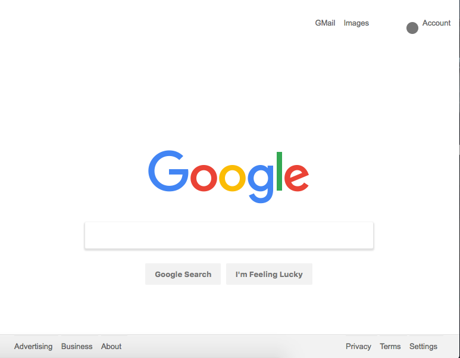

January 19 2017
- Read chapters 4 through 10 of Learn to Program and completed exercises
class OrangeTree
def initialize
@age = 0
@orangeCount = 0
@height = 0
puts "An orange tree is planted."
end
def height
puts "Tree is " + @height.to_s + " feet tall."
end
def oneYearPasses
puts "One year passes"
@age = @age + 1
@height = @height + 10
if @age >= 3
@orangeCount = @orangeCount + 1
end
end
def countTheOranges
puts "The tree has " + @orangeCount.to_s + " oranges!"
end
def pickAnOrange
if @orangeCount > 0
@orangeCount = @orangeCount - 1
puts "What a delicious orange!"
else
puts "There are no oranges to pick this year"
end
end
end
tree = OrangeTree.new
tree.oneYearPasses
tree.oneYearPasses
tree.oneYearPasses
tree.oneYearPasses
tree.height
tree.countTheOranges
tree.pickAnOrange
January 18 2017
- Finished entire Ruby track on codecademy
- Read first 3 chapters of Chris Pine's Learn to Program
January 17 2017
- Completed etch-a-sketch project
- Began Ruby course on codecademy

The Odin Project-Blog Post 1
About five months ago I began teaching myself to code in hopes of a career as a front end a developer. When I started, I thought if I put in several hours everyday and followed a study guide with tutorials, I’d be on my way to employable in around half a year. By the time the holidays hit, however, reality set in. I had finished up my path, lost my way, and knew I needed something more. The fundamentals were like second nature, but I needed the next step. I extensively researched coding bootcamps. They seemed to be a 0-100 course of action. Not to mention tuition costs close to $20,000 and none in my area of the country. I was more on the hunt for something that would give me a taste of what a real developer does and help me build a portfolio. Considering where I was in my learning, and where I am geographically, I decided a bootcamp might not be the best option. I asked around on reddit and my thoughts were confirmed. One of those reddit threads led me to The Odin Project.
My only experience with TOP (which I will from here on out refer to it as) up to that point was at the beginning of my journey. I remember hearing about it, giving it a cursory glance, and thinking that it was beyond my level of comprehension. Returning to it after a few months of studying, however, seemed like perfect timing. It is a projects-based, bootcamp style curriculum created by alumni of App Academy. And the best part is it’s free! So with new renewed vigor, I began a new journey, and will be chronicling it weekly here.
Conquering My Fear of the Command LineI love that TOP begins with a course on the command line, because through all of my studying, it is the one thing I knew was absolutely essential but was always afraid of tackling. No other study guide I’ve followed has provided adequate command line material until this one. The first section teaches you how to navigate your computer’s file system, create directories and files, make copies of and remove those files. This leads right into the next section which is on Git and GitHub. Now that I am finally competent using the command line and Git, I’m starting to feel like an actual coder.
Devtools and the Front EndThe subcategory following Git is the Front End. These are tools and languages that I am familiar with and have been studying since the summer, so while I was able to traverse this section rather quickly, the real value was in the projects. The first project of TOP is to redo the Google homepage using HTML and CSS. Simple enough. But the fact that it is not a tutorial and no one is holding your hand along the way is what makes it special. You are forced to put what you know into practice and the frustration of creating a webpage pays off in the end with a huge confidence boost.
The second project is to build an etch-a-sketch tool using JavaScript and jQuery, which I will be getting to at the beginning of week 2.
January 14 2017
- Completed Code School's "Try jQuery" course
- completed Codecademy's jQuery course
January 13 2017
- Solved Multiples of 3 and 5 problem from Project Euler
- Codecademy's first 3 jQuery sections
- Code School's first 4 "Try jQuery" sections
function sum(){
var result = 0;
for(var i=0;i<1000;i++){
if(i%5===0 && i%3===0){
console.log(i += result);
}
}
}January 12 2017
- The Odin Project Developer tools sections
- 2 Code School courses
- Learned how to git -f push origin 
Januray 11 2017
- The Odin Project
- Version Control basics
- Code School's Try Git course
- Codecademy's Learn Git course
- Completed Git Project
- Completed HTML/CSS Android tutorial Project and used git to push it to GitHub
January 10 2017
- Created a gh-pages site for this blog
- CodeWars problem - The function should take three arguments - operation(string/char), value1(number), value2(number). The function should return result of numbers after applying the chosen operation.
- Began The Odin Project and completed section 1: The Basics
- Completed a command line crash course on Viking Code School
- Completed first two sections of Codecademy's command line course
- Installed Ruby, Rails, Heroku, RVM, Ruby Gems, and deployed my first rails app
function basicOp(operation, value1, value2){
return eval(value1+operation+value2);
}
basicOp('-', 15, 18);//-3January 9 2017
- Weekly goals page
- Learned how to make partial templates via the node tutorial video series - you make one file with, for example, a nav that can be included using javascript on all the pages of your site.
- Learned how to use queries and automatically fill input forms with them
- Added links to index navigation and tried to get the CSS right - unfinished
- Asked r/learnjavascript about on-site vs. online bootcamps
January 5 2017
- Design patterns
- Singleton pattern
- Mediator pattern - it's like the "flight tower" of your workflow
- Tried and failed to complete a CodeWars problem but got valuable pseudocoding practice
- Worked on blog
- added month name to header of each page
- added margins to body
- fooled around with index page CSS for awhile
Today was one of the days where I worked for seven or eight hours, but I feel like I barely accomplished anything. I can attribute this feeling to three reasons:
- I had a hard time grasping the design patterns I studied.
- I spent over an hour trying to hack a CodeWars problem but eventually had to unlock the solutions.
- I spent the majority of my evening grinding my teeth and trying to get the index page of the blog right - unfinished business.
January 4 2017
- Created the January page and changed the a:hover effects
- Read about and practiced the module design pattern
- And the Revealing module pattern
//Module Pattern
var cartModule = (function () {
//privates
var cart = [];
return {
//return object exposed to the public
addItem: function(items) {
cart.push(items);
},
countItem: function() {
return cart.length;
}
};
})();
cartModule.addItem("bread");
cartModule.addItem("soap");
cartModule.addItem("beer");
console.log(cartModule.countItem());//3
console.log(cartModule.cart)//undefined because it's private
//The Revealing Module Pattern
var fellowship = (function() {
var quest = "adventure";
var members = function(mems){
return " " + mems + " are going on the " + quest;
}
return {
setMembers: members,
setQuest: quest
};
})();
console.log(fellowship.setMembers("The fellowship"));//The fellowship are going on the adventureJanuary 3 2017
- Created folder on Weekly-Goals repository to store past weeks' goals/performance, and updated the Readme for the current week
- Continued watching Node JS Tutorial for Beginners
- Learned basic routing
- Installed nodemon
- Learned how to use express, and how much easier it is to route than using conditionals
//Basic Routing
var http = require('http');
var fs = require('fs');
var server = http.createServer(function(request, response){
console.log("server was created" + request.url);
if(request.url === '/home' || request.url === '/'){
response.writeHead(200, {'content-type': 'text/html' });
fs.createReadStream(__dirname + '/node.html').pipe(response);
} else if(request.url === '/dec'){
response.writeHead(200, {'content-type': 'text/html' });
fs.createReadStream(__dirname + '/node-december.html').pipe(response);
} else if(request.url === '/api/nfl'){
var dolphins = [{name: "Miami Dolphins", conference: "AFC", division: "East", city: "Miami Gardens"}];
response.writeHead(200, {'content-type': 'application/json'});
response.end(JSON.stringify(dolphins));
}
else {
response.writeHead(200, {'content-type': 'text/html' });
fs.createReadStream(__dirname + '/node-404.html').pipe(response);
}
});
server.listen(8000);
console.log("listening to localhost 8000");